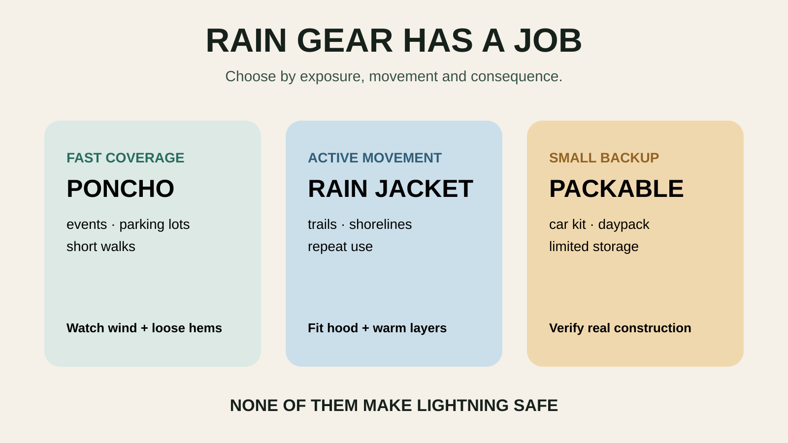

GEAR SYSTEM · WET-WEATHER DAYS
Family Rain Gear: Jackets vs Ponchos vs Packable Shells
A poncho can save a parking-lot sprint. A shell can carry a real trail day. Neither fixes lightning, cold or bad judgment.
The three decisions before shopping
- Are you escaping rain or staying out in it? Parking lot to museum is a poncho problem. A two-hour trail is a shell problem.
- Will the child move independently? Loose fabric near bikes, climbing structures, moving water or dense branches can snag and obscure feet.
- Is cold part of the consequence? Rain protection is not insulation. A waterproof layer over wet cotton does not create warmth.

Rain jacket: best for movement and repeat use
A fitted rain jacket is the default for hiking, windy shorelines, repeated outdoor use and children who need hands free. Look for a hood that turns with the head without covering vision, closures a child can operate, enough room for the planned insulating layer and cuffs that do not swallow hands.
Tradeoffs: cost, sizing and maintenance. Children outgrow fitted gear. Waterproof-breathable fabrics still feel humid during hard movement, especially in warm weather. “Breathable” does not mean dry under every condition.
Reusable poncho: best for quick coverage
A reusable poncho covers a person quickly and can extend over a small daypack. It is useful at amusement parks, outdoor events, sidelines and short walks where speed and ventilation matter more than precise fit.
Tradeoffs: wind lifts loose fabric; the sides may expose arms and legs; long hems can hide feet; and loose material is a poor match for bikes, moving machinery, climbing, scrambling or places where snagging matters. A poncho over a large pack can also pull the hood backward.
Packable shell: useful only if it still works when packed
“Packable” describes storage, not protection quality. Some shells fold into a pocket; others simply compress small. Check the maker’s waterproof construction, seams, hood, care instructions and intended use. A tiny emergency shell that lives in the car may be perfect for a day trip and miserable for an exposed hike.
Tradeoffs: lighter fabric may be less durable around straps and rough surfaces. Minimal designs may omit pit zips, substantial pockets or adjustable hoods. Do not pay for a smaller bundle unless storage is the actual constraint.
Water-resistant is not the same promise
Water-resistant windbreakers can shed a brief sprinkle. They are not automatically waterproof rainwear. Product language varies, and laboratory ratings do not perfectly predict comfort on a child moving through wind and rain. Check the manufacturer’s exact claim, seam construction and care requirements.
Durable water-repellent surface treatments can wear and may need cleaning or renewal according to the manufacturer. A jacket that starts wetting out is not always ruined, but do not improvise coatings around children without the maker’s instructions.
The loaded fit test
- Put on the shirt and insulating layer the person will actually wear.
- Zip or close the rain layer fully. Reach overhead, squat and turn the head.
- Confirm the hood does not block side vision and the hem does not hide feet.
- Add the real backpack. Check shoulder pressure, hood pull and whether water funnels behind the neck.
- Use a spray bottle or short hose test outside, following product care guidance. Look at closures and seams, not just the fabric panel.
Build three kits, not one giant bin
Car escape kit
Reusable ponchos or simple shells, dry socks, one towel and a bag for wet gear. This handles surprise rain between vehicle and attraction. It does not authorize an outdoor thunder plan.
Trail kit
Fitted shells, insulating layers appropriate to the forecast, dry backup for the youngest child and pack protection when needed. Put the shell where it can be reached before the rain—not beneath lunch and every spare shoe. Pair it with the family hiking daypack system.
Event kit
Ponchos can work well when umbrellas are banned or inconsiderate. Verify the venue’s rules, seat dimensions and bag policy. Choose a reusable design that can be dried, rather than treating disposable plastic as the default.
Warm rain, cold rain and sweat
In warm rain, overheating and sweat can make a waterproof layer feel like failure. Slow the pace, use ventilation and remove insulation that is not needed. In cold rain, the margin shrinks: protect insulation, keep dry layers sealed and shorten the outing before children become chilled.
Watch behavior, not bravado. Shivering, clumsiness, confusion or unusual quiet are reasons to stop exposure and seek warmth. General gear advice is not a substitute for current weather guidance or medical help.
Lightning changes the decision
Rain gear protects against water, not lightning. NOAA says lightning can strike away from the rain core. If thunder is audible, leave open water, overlooks, fields and isolated trees and move to a substantial building or enclosed hard-topped vehicle. Do not keep hiking because everyone is already wearing shells.
The no-buy option
Test what you own. A correctly sized jacket that handles the forecast is better than a new “outdoor” shell bought for branding. Borrow for a one-time event, size up carefully when safe, and keep spare clothes in the car. Replace gear when the fit blocks movement or vision, the closure fails, the manufacturer’s care process no longer restores protection, or the trip demands a capability the current layer never claimed.
A buying framework that keeps the commission out
- Use case: escape, event, trail or sustained exposure.
- Fit: layers, hood vision, hand access and safe hem length.
- Construction: verify the maker’s waterproof and seam claims.
- Ventilation: front zip, vents and intended activity level.
- Care: cleaning, drying and treatment instructions your household will follow.
- Exit cost: return policy, child growth and whether another family member can inherit it.
The Amazon category links below use Mr Adventure Dad’s approved affiliate tag. They are for comparing broad categories, not claimed winners. We have not asserted hands-on testing, current prices, stock, ratings or universal performance. Verify manufacturer specifications and fit before buying.
What not to buy
Skip a poncho whose hem creates a trip hazard, a hood that blocks a child’s vision, a shell too tight for the required warm layer, or a product that substitutes vague “weatherproof” language for a clear use case. Do not buy matching family gear if the same design fits only one body correctly.
Who should skip buying
Skip buying when the day can be moved, the car is the real backup, existing jackets pass the loaded test or the child will outgrow the item before the next wet season. Spend first on the system failure you have actually observed.
Put it to work
Use the trail system on the Taughannock Falls family plan, where rain can change gorge conditions, or keep the simpler car kit ready for the Green Lakes day plan. The broader family day-trip system decides whether wet weather is manageable or a reason to pivot.
Safety sources
Guidance and product categories were checked August 24, 2026. This is a decision framework, not a product test or a substitute for route-specific safety guidance.
Keep the weekend moving
Use the family day-trip system, the hiking daypack guide and the cooler guide to make the plan survive contact with actual children.
THE USEFUL STUFF
Gear that removes friction.
These are practical categories to compare—not a reason to overpack. Check fit, specifications and current reviews before buying.
Paid links: As an Amazon Associate I earn from qualifying purchases. You pay no additional cost.
Kids' waterproof rain jackets
Compare hood visibility, layer room, cuff fit, seam construction and the maker's exact waterproof claim.
See current options → COMPARE ON AMAZONPackable adult rain shells
Prioritize loaded fit, ventilation and verified construction over the smallest packed bundle.
See current options → COMPARE ON AMAZONReusable family rain ponchos
Useful for quick event coverage when loose fabric will not create a snag or trip hazard.
See current options →